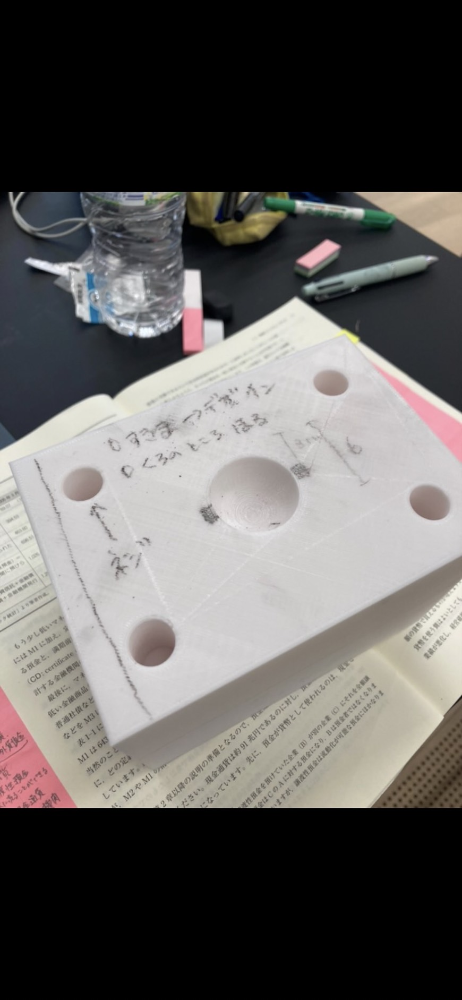
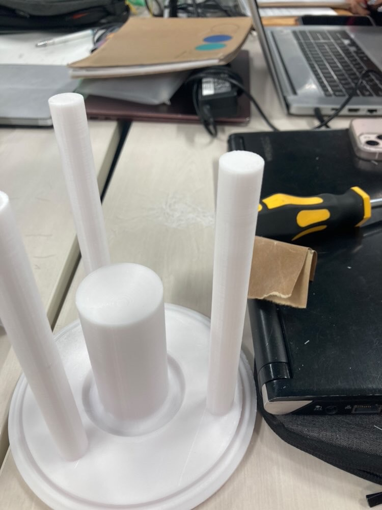
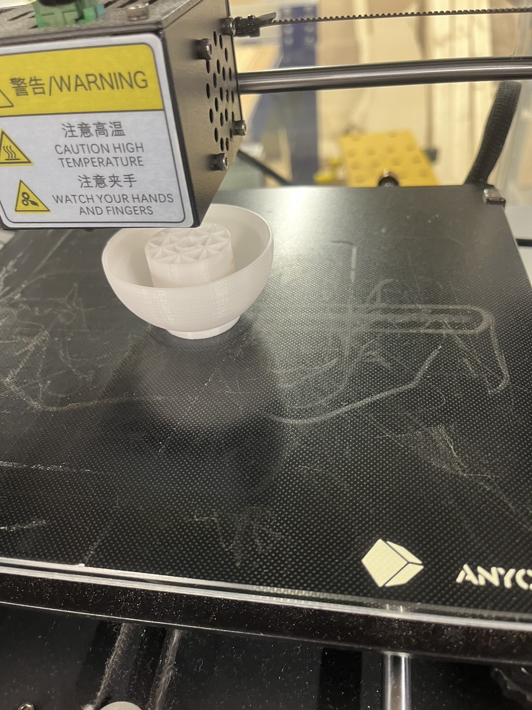
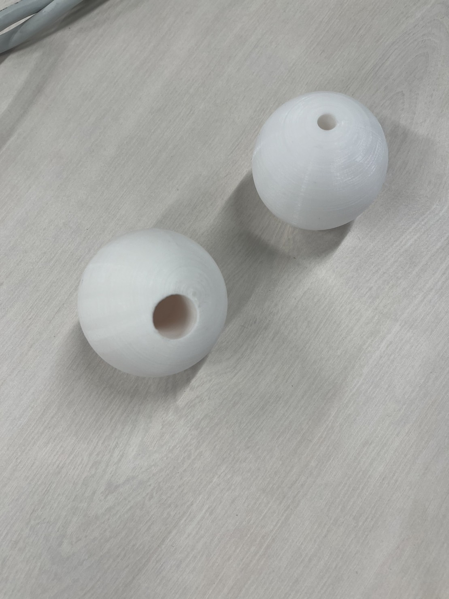
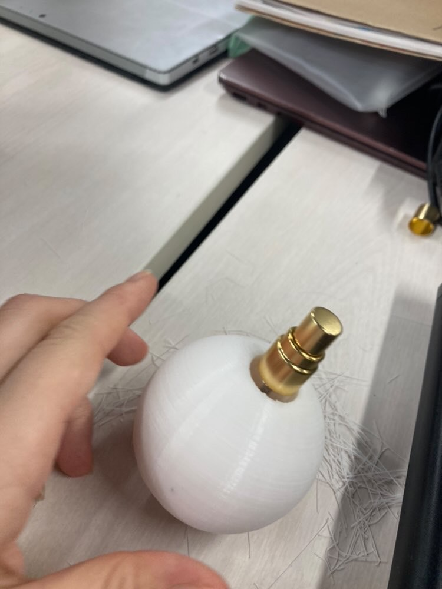
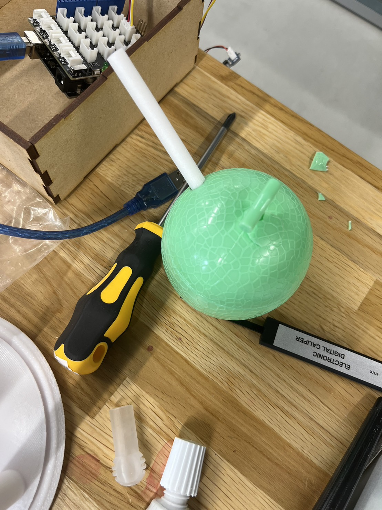
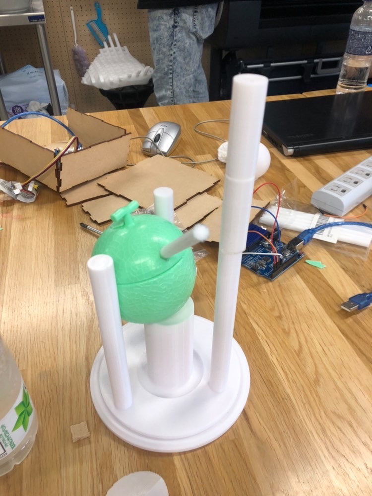
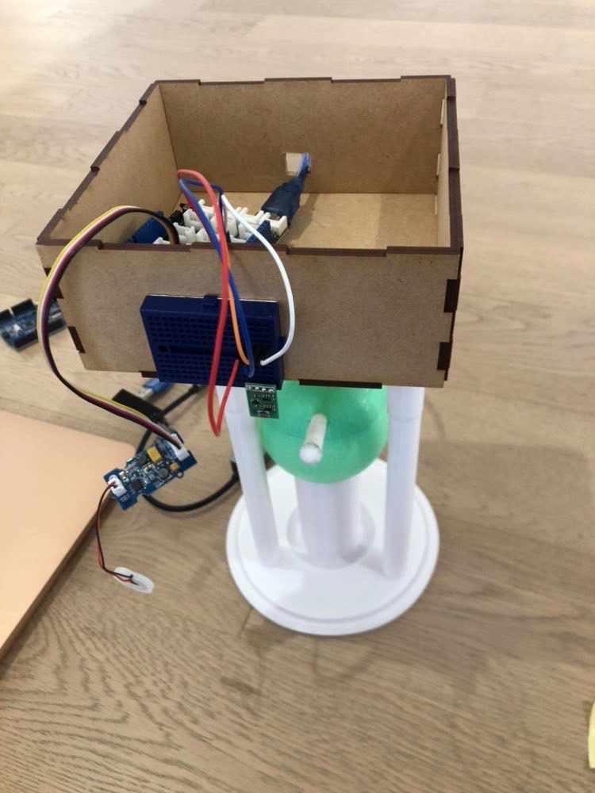
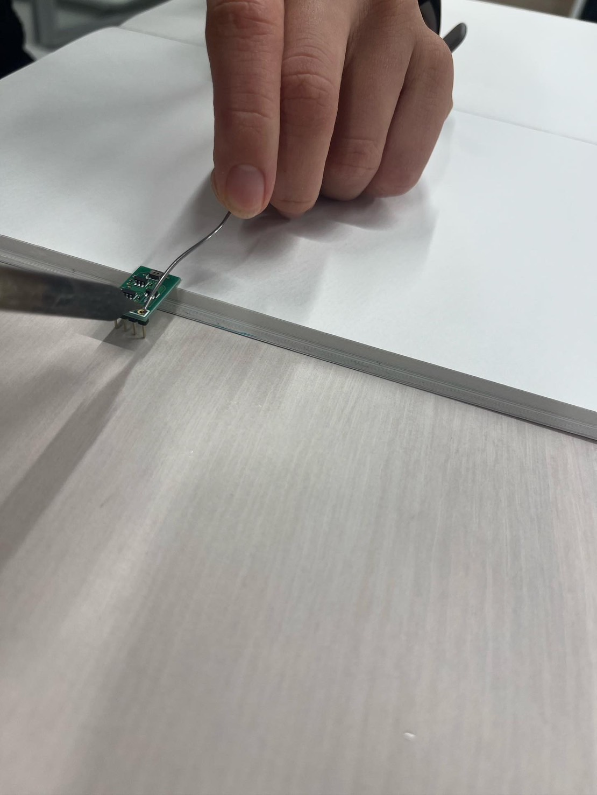
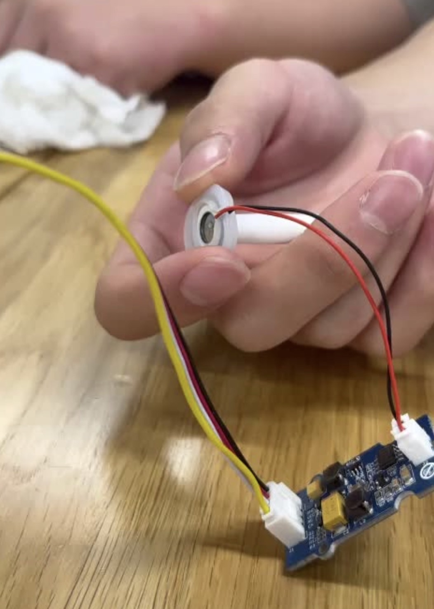

PROJECTNOTE
1.アイデアスケッチ

2.概要
60人にアンケートを実施して匂いに関する回答が多かったため、香水、匂い感知センサー、自動プッシュできる本体を組み合わせて
「自動で匂いを感知して香水を噴射できるモノ」を制作する。
3.プロセスメモープロセス、必要なモノ、ステップ（プロジェクトマネジメント）
プロセス＆ステップ
必要なもの
プロセスメモ
■は考えないといけないこと、疑問等
●は具体的にやること
→はやったこと
■3D本体を作る
●香水本体では、プッシュノズルが硬かったため、詰め替え用の本体を用意することになった。
→（本体試作品1）

土台に無駄が多かったため構想を練り直すことになった。
→（本体試作品２）

無駄をなくして見た目をすっきりさせた。
■詰め替え容器
→（詰め替え本体１）
 
→詰め替え容器と組み合わせた

■大学の備品のスポンジに水分を含ませて振動センサーでミストにすることにした。
●フィラメントで液体は貯められないのでメロンアイスの容器を使うことにした。

→高さ調整をして本体と組み合わせる

●木箱をレーザーカッターで作成し、Arduinoを収納した

■匂いセンサー
→
匂いセンサーを溶接してくっつけた

■振動センサー
→
●完成品
4.使用したモノ
5.紹介動画
6.班のメンバー
さつき ゆうみ るな